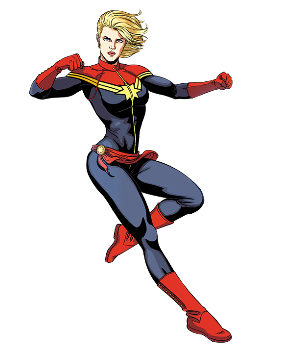
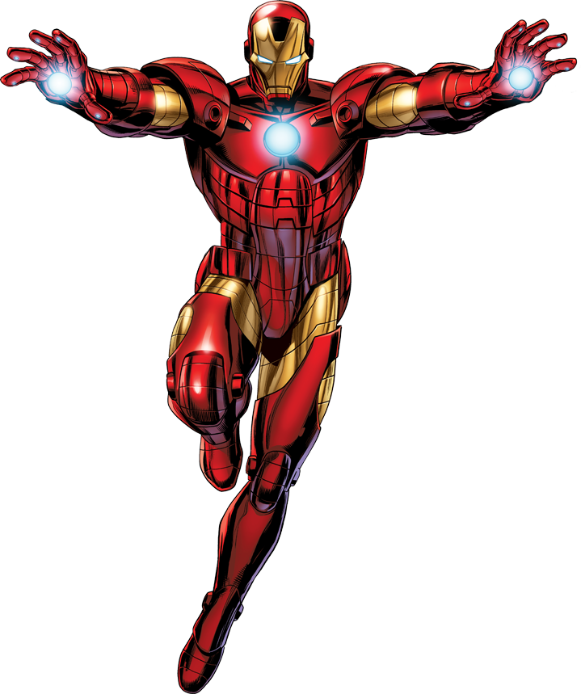
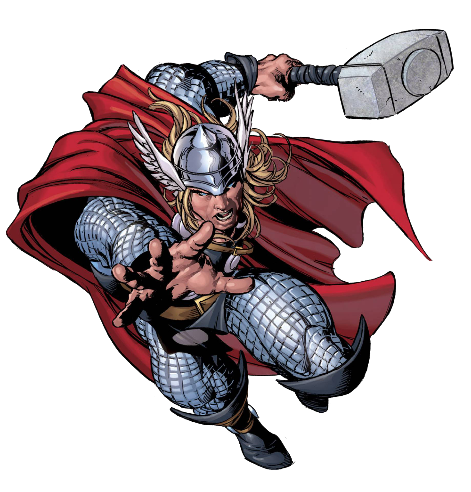
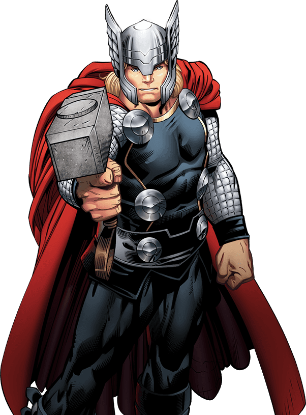
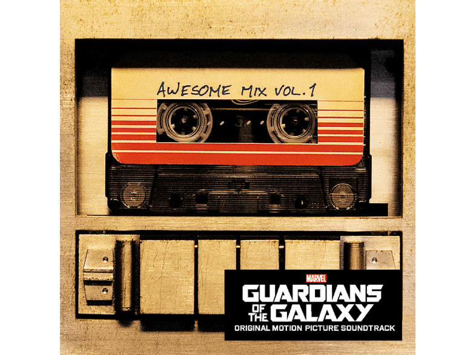
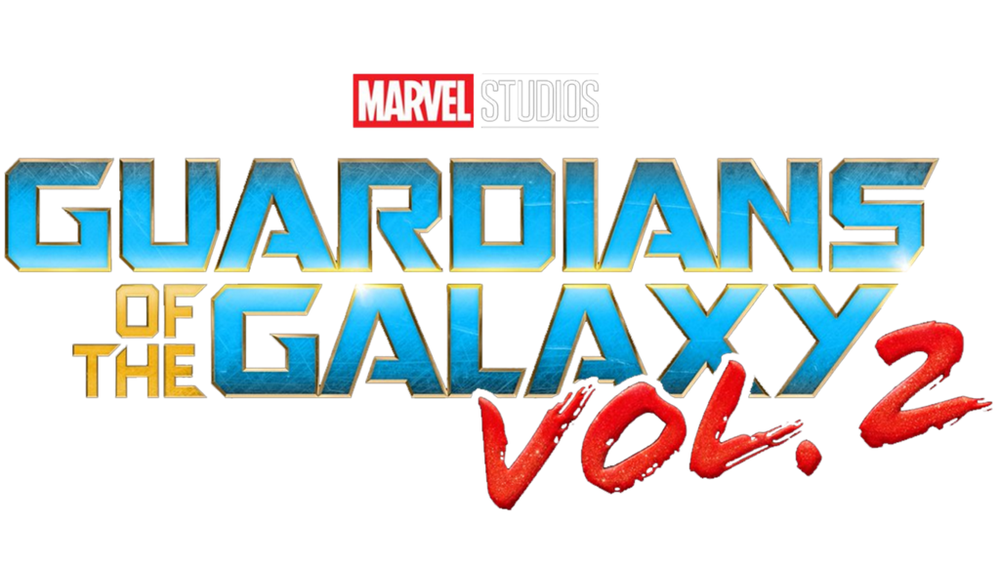
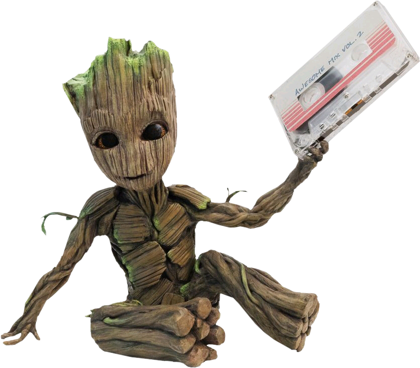
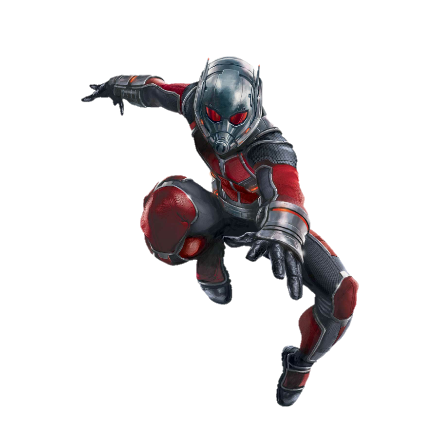
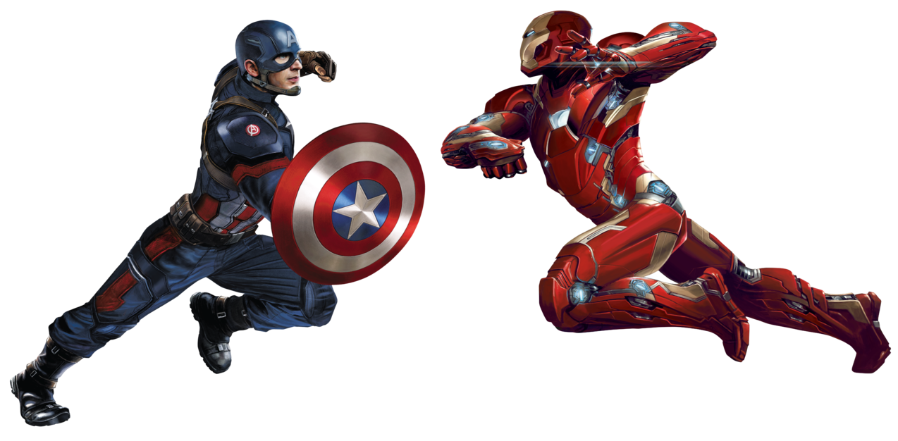
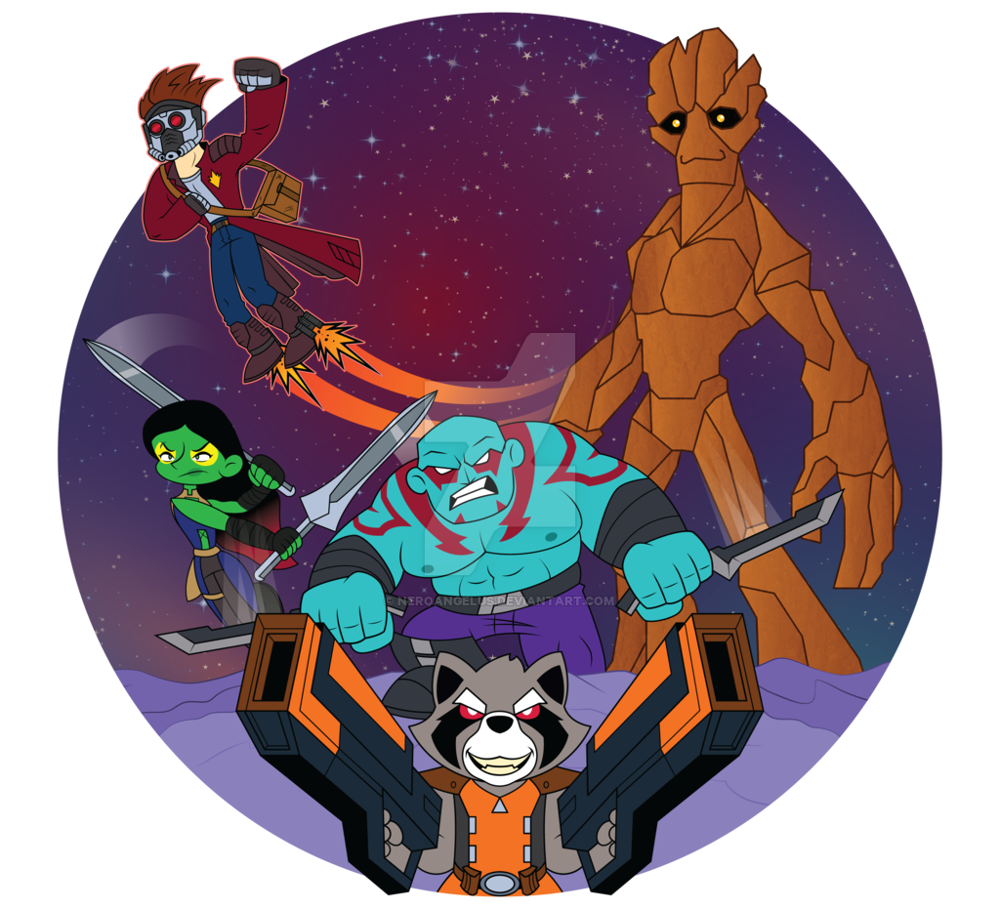

Capitán América:El primer vengador
Steve Rogers, se ofrece voluntario para participar en un programa experimental que lo convierte en el super soldado conocido como Capitán América. Rogers se une a Bucky Barnes y Peggy Carter para hacer la guerra a los malvados de la organización HYDRA, dirigido por el villano Red Skull.

Steve Rogers, se ofrece voluntario para participar en un programa experimental que lo convierte en el super soldado conocido como Capitán América. Rogers se une a Bucky Barnes y Peggy Carter para hacer la guerra a los malvados de la organización HYDRA, dirigido por el villano Red Skull.
Capitana Marvel
Situada en los años 90, la trama sigue las aventuras de Carol Danvers, una poderosa guerrera que intenta mediar en un conflicto entre dos razas alienígenas que ha terminado llegando a la Tierra.

Situada en los años 90, la trama sigue las aventuras de Carol Danvers, una poderosa guerrera que intenta mediar en un conflicto entre dos razas alienígenas que ha terminado llegando a la Tierra.
Iron Man
Tony Stark se dedica a vender armas y lo tiene todo: dinero, poder, mujeres... Durante una demostración en Afganistán, un poderoso traficante lo captura. Gravemente herido (un fragmento de metralla está junto a su corazón), Stark se construye una armadura que le mantiene con vida y gracias a la cual escapa. Ya en USA, jura usar su nuevo traje para salvar a la gente.
Tony Stark se dedica a vender armas y lo tiene todo: dinero, poder, mujeres... Durante una demostración en Afganistán, un poderoso traficante lo captura. Gravemente herido (un fragmento de metralla está junto a su corazón), Stark se construye una armadura que le mantiene con vida y gracias a la cual escapa. Ya en USA, jura usar su nuevo traje para salvar a la gente.

Iron Man 2
Sometido a presiones por parte del gobierno, la prensa y la opinión pública para que comparta su tecnología con el ejército, Tony Stark es reacio a desvelar los secretos de la armadura de Iron Man porque teme que esa información pueda caer en manos indeseables. Con Pepper Potts y James “Rhodey” Rhodes a su lado, Tony forja alianzas nuevas y se enfrenta a nuevas y poderosas fuerzas.
Sometido a presiones por parte del gobierno, la prensa y la opinión pública para que comparta su tecnología con el ejército, Tony Stark es reacio a desvelar los secretos de la armadura de Iron Man porque teme que esa información pueda caer en manos indeseables. Con Pepper Potts y James “Rhodey” Rhodes a su lado, Tony forja alianzas nuevas y se enfrenta a nuevas y poderosas fuerzas.

El Increible Hulk
En esta ocasión, Bruce Banner comienza la película en Brasil, donde busca una cura para su sobreexposición a los rayos gamma que le transforma en Hulk. Banner huye del ejército, liderado por el general Ross, y del militar Emil Blonsky, transformado también en un gigantesco y poderoso ser, La Abominación, que tras hacerse con el secreto que le convierte en un monstruo verde. Solo Betty Ross estará a su lado

En esta ocasión, Bruce Banner comienza la película en Brasil, donde busca una cura para su sobreexposición a los rayos gamma que le transforma en Hulk. Banner huye del ejército, liderado por el general Ross, y del militar Emil Blonsky, transformado también en un gigantesco y poderoso ser, La Abominación, que tras hacerse con el secreto que le convierte en un monstruo verde. Solo Betty Ross estará a su lado
Thor
Thor es un poderoso pero arrogante guerrero cuyos imprudentes actos reavivan una antigua guerra. Como consecuencia, Thor es castigado a ser enviado a la Tierra, donde se ve obligado a vivir entre humanos. Cuando el villano más peligroso de su mundo envía a las fuerzas más oscuras de Asgard, Thor aprende lo que hace falta para ser un verdadero héroe.
Thor es un poderoso pero arrogante guerrero cuyos imprudentes actos reavivan una antigua guerra. Como consecuencia, Thor es castigado a ser enviado a la Tierra, donde se ve obligado a vivir entre humanos. Cuando el villano más peligroso de su mundo envía a las fuerzas más oscuras de Asgard, Thor aprende lo que hace falta para ser un verdadero héroe.

Los vengadores
Representa la reunión más espectacular jamás vista de superhéroes. Un enemigo inesperado amenaza con poner en peligro la seguridad mundial, así que Nick Fury, director de la agencia internacional para el mantenimiento de la paz conocida con el nombre de S.H.I.E.L.D., necesita encontrar urgentemente un equipo que salve al mundo del mayor de los desastres.
Representa la reunión más espectacular jamás vista de superhéroes. Un enemigo inesperado amenaza con poner en peligro la seguridad mundial, así que Nick Fury, director de la agencia internacional para el mantenimiento de la paz conocida con el nombre de S.H.I.E.L.D., necesita encontrar urgentemente un equipo que salve al mundo del mayor de los desastres.

Iron Man 3
Clausurados por el gobierno, los experimentos biológicos de Aldrich Killian para perfeccionar humanos encuentran un mecenas en el Mandarín. Pero sus oscuras intenciones encontrarán un enemigo: Iron Man

Clausurados por el gobierno, los experimentos biológicos de Aldrich Killian para perfeccionar humanos encuentran un mecenas en el Mandarín. Pero sus oscuras intenciones encontrarán un enemigo: Iron Man
Thor El mundo oscuro
el Poderoso Vengador mientras lucha por salvar la Tierra y los Nueve Reinos de un oscuro enemigo que es anterior al mismísimo universo.
el Poderoso Vengador mientras lucha por salvar la Tierra y los Nueve Reinos de un oscuro enemigo que es anterior al mismísimo universo.

Capitán América: El soldado del invierno
Dos años después de la batalla de Nueva York en la que Los Vengadores salvaron al mundo, el Capitán América se enfrenta al Soldado de Invierno, un enemigo estrechamente conectado con su pasado. Un desafío que le llevará a destapar, junto a la Viuda Negra, una turbia trama en el mismo corazón de S.H.I.E.L.D.

Dos años después de la batalla de Nueva York en la que Los Vengadores salvaron al mundo, el Capitán América se enfrenta al Soldado de Invierno, un enemigo estrechamente conectado con su pasado. Un desafío que le llevará a destapar, junto a la Viuda Negra, una turbia trama en el mismo corazón de S.H.I.E.L.D.
Guardianes de la Galaxia
El temerario aventurero Peter Quill es objeto de un implacable cazarrecompensas después de robar una misteriosa esfera. Para poder escapar del incansable Ronan, Quill se ve obligado a pactar una complicada tregua con un cuartero de disparatados inadaptados: Rocket, un mapache armado con un rifle, Groot, un humanoide con forma de árbol, la letal y enigmática Gamora y el vengativo Drax el Destructor.

El temerario aventurero Peter Quill es objeto de un implacable cazarrecompensas después de robar una misteriosa esfera. Para poder escapar del incansable Ronan, Quill se ve obligado a pactar una complicada tregua con un cuartero de disparatados inadaptados: Rocket, un mapache armado con un rifle, Groot, un humanoide con forma de árbol, la letal y enigmática Gamora y el vengativo Drax el Destructor.
Guardianes de la Galaxia Vol. 2
Saboreando aún el éxito de su última aventura, los Guardianes de la Galaxia acuden al rescate de Sovereign, un planeta poblado por seres genéticamente perfectos amenazado por el temible monstruo Obelisco. Sus aventuras les llevarán también a Berhert, donde Peter Quill, tras años buscándole, encontrará a su padre, Ego.

Saboreando aún el éxito de su última aventura, los Guardianes de la Galaxia acuden al rescate de Sovereign, un planeta poblado por seres genéticamente perfectos amenazado por el temible monstruo Obelisco. Sus aventuras les llevarán también a Berhert, donde Peter Quill, tras años buscándole, encontrará a su padre, Ego.
I am Groot
Con su personalidad infantil y poco razonable, Groot abandona la nave espacial de los Guardianes de la Galaxia y acaba aterrizando en un planeta extraño, donde encuentra con todo tipo de criaturas.
Con su personalidad infantil y poco razonable, Groot abandona la nave espacial de los Guardianes de la Galaxia y acaba aterrizando en un planeta extraño, donde encuentra con todo tipo de criaturas.

Vengadores: La era de Ultrón
Después de la caída de S.H.I.E.L.D., Tony Stark crea Ultrón, un sistema de seguridad artificial para proteger la Tierra. Cuando este toma conciencia y se rebela contra su creador, Los Vengadores deberán destruirlo antes de que aniquile a la Humanidad.

Después de la caída de S.H.I.E.L.D., Tony Stark crea Ultrón, un sistema de seguridad artificial para proteger la Tierra. Cuando este toma conciencia y se rebela contra su creador, Los Vengadores deberán destruirlo antes de que aniquile a la Humanidad.
Ant-Man
Armado con un supertraje que le permite reducir su tamaño, aumentar su fuerza y comunicarse con los insectos, Scott Lang se convierte en el inesperado pupilo del Dr. Hank Pym. Junto a la hija de este, Hope Van Dyne, Lang deberá planear un robo en el laboratorio del científico Darren Cross.

Armado con un supertraje que le permite reducir su tamaño, aumentar su fuerza y comunicarse con los insectos, Scott Lang se convierte en el inesperado pupilo del Dr. Hank Pym. Junto a la hija de este, Hope Van Dyne, Lang deberá planear un robo en el laboratorio del científico Darren Cross.
Capitán América: Civil War
Después de que otro incidente internacional en el que se ven envueltos los Vengadores produzca daños colaterales, la presión política obliga a poner en marcha un sistema para depurar responsabilidades y un organismo rector que determine cuándo hay que recurrir a los servicios del equipo. El nuevo statu quo divide a los Vengadores mientras intentan proteger al mundo de un nuevo malvado.
Después de que otro incidente internacional en el que se ven envueltos los Vengadores produzca daños colaterales, la presión política obliga a poner en marcha un sistema para depurar responsabilidades y un organismo rector que determine cuándo hay que recurrir a los servicios del equipo. El nuevo statu quo divide a los Vengadores mientras intentan proteger al mundo de un nuevo malvado.

Spider-Man: Homecoming
Un joven Peter Parker/Spider-Man comienza a experimentar su recién descubierta identidad como el superhéroe Spider-Man. Después de la experiencia vivida con los Vengadores, Peter regresa a casa, donde vive con su tía. Bajo la atenta mirada de su supervisor Tony Stark Peter intenta mantener una vida normal pero irrumpe en su rutina diaria el nuevo villano Vulture y con él, lo más importante de la vida de Peter se verá amenazado.
Un joven Peter Parker/Spider-Man comienza a experimentar su recién descubierta identidad como el superhéroe Spider-Man. Después de la experiencia vivida con los Vengadores, Peter regresa a casa, donde vive con su tía. Bajo la atenta mirada de su supervisor Tony Stark Peter intenta mantener una vida normal pero irrumpe en su rutina diaria el nuevo villano Vulture y con él, lo más importante de la vida de Peter se verá amenazado.

Doctor Strange
Stephen Strange, quien, después de un terrible accidente de tráfico, sus manos quedan destrozadas e iniciará un viaje tanto físico como espiritual para recuperarse. Así, descubre el mundo oculto de las dimensiones mágicas.
Stephen Strange, quien, después de un terrible accidente de tráfico, sus manos quedan destrozadas e iniciará un viaje tanto físico como espiritual para recuperarse. Así, descubre el mundo oculto de las dimensiones mágicas.

Black Widow
Natasha Romanoff, alias Viuda Negra, se enfrenta a las partes más oscuras de su pasado cuando surge una peligrosa conspiración. Perseguida por una fuerza que no se detendrá ante nada para derribarla, Natasha debe enfrentarse a su historia como espía y a las relaciones rotas que dejó a su paso mucho antes de convertirse en Vengadora.
Natasha Romanoff, alias Viuda Negra, se enfrenta a las partes más oscuras de su pasado cuando surge una peligrosa conspiración. Perseguida por una fuerza que no se detendrá ante nada para derribarla, Natasha debe enfrentarse a su historia como espía y a las relaciones rotas que dejó a su paso mucho antes de convertirse en Vengadora.

Black Panther
T'Challa es el líder del reino de Wakanda, una ultra avanzada nación africana. Este país posee el único depósito de Vibranium, un metal capaz de absorber las vibraciones sónicas y con el que se pueden fabricar armas. T'Challa deberá defender su país del ataque de los enemigos que quieren apoderarse del poderoso metal.

T'Challa es el líder del reino de Wakanda, una ultra avanzada nación africana. Este país posee el único depósito de Vibranium, un metal capaz de absorber las vibraciones sónicas y con el que se pueden fabricar armas. T'Challa deberá defender su país del ataque de los enemigos que quieren apoderarse del poderoso metal.
Guardianes de la Galaxia: Especial felices fiestas
Con la misión de hacer que Peter Quill tenga una Navidad inolvidable, Drax y Mantis urden un "plan sin fisuras": dirigirse a la Tierra en busca del regalo perfecto, cierto héroe que desafió a todo un pueblo mediante su bailoteo, el legendario Kevin Bacon.
Con la misión de hacer que Peter Quill tenga una Navidad inolvidable, Drax y Mantis urden un "plan sin fisuras": dirigirse a la Tierra en busca del regalo perfecto, cierto héroe que desafió a todo un pueblo mediante su bailoteo, el legendario Kevin Bacon.